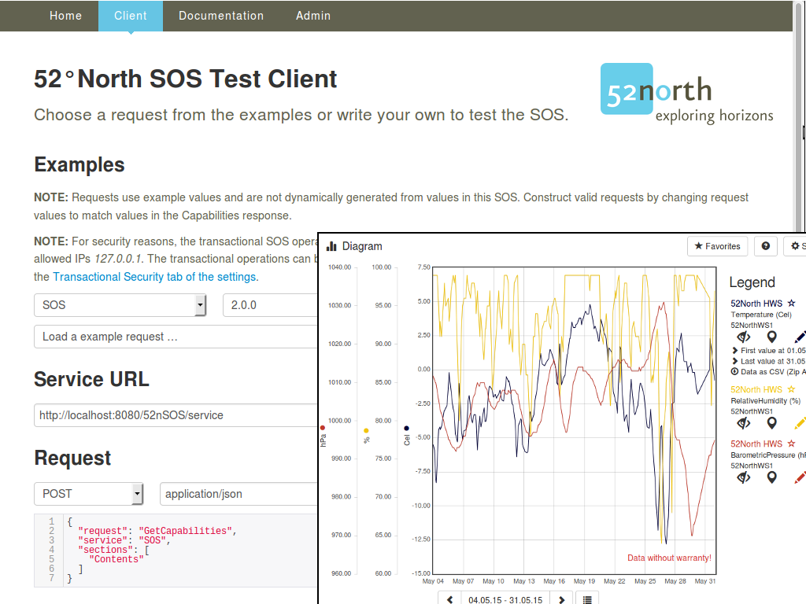

52 North SOS¶
Om¶
The 52°North Sensor Observation Service (SOS) supports the interoperable provision of live and archived sensor observation data. A sensor could be a water level meter in a stream, a weather station, or an air quality monitoring station.


Kärnfunktioner¶
Webbläsarklient: SOS levereras med en webbläsarbaserad applikation. Detta ger möjlighet för administration och konfiguration av tjänstinstansen, samt att skicka testbegäran för SOS-åtgärder. Lämpliga exempelbegäran ingår.
Helgoland: SOS innehåller Helgoland-applikationen för prospektering, analys och visualisering av sensor webb data inom olika användningsområden, t ex hydrologi, meteorologi, miljöövervakning, trafikledning.
Specifikationer: 52°North SOS implementerar den aktuella specifikationsversionen 2.0.0 och den tidigare versionen 1.0.0 (här inga transaktionsoperationer). Implementerade operationer för varje standardversion listas nedan.
INSPIRE Download Service Extension: Starting with Version 4.2.0, an extension is available that allows the SOS to be used as an INSPIRE download service. Background information is provided in a blog post and in the wiki .
Air Quality Data e-Reporting Extension: Starting with version 4.3.0, an extension is available that provides for the Air Quality Data Flows E1a, E1b and E2a compliant data (the instance on OSGeoLive is not configured accordingly). The installation and configuration is documented in the 52°North Wiki.
Sensor Web REST-API: Starting with Version 4.1.1., a bundle version is available, that directly provides the RESTful API, is available. Hence, observation data can be requested in a RESTful way and is returned in JSON encoded responses. More details incl. documentation can be found in the SOS webapp.
INSPIRE Specialized Observations: Support for the INSPIRE Specialized Observations defined in Guidelines for the use of Observations & Measurements and Sensor Web Enablement-related standards in INSPIRE (D2.9) (detailed information about the implementation).
ResultFiltering: stöd för filtrering av observationer (GetObservation) och information om datatillgänglighet (GetDataAvailability) med observationsvärdet.
Read more: Details of the implemented functionalities can be found in the 52°North Wiki.
Utvecklingen av den här versionen av 52°North SOS stöddes av olika projekt, organisationer och personer. Mer information finns i 52°North SOS client.
We would like to thank the Belgian Interregional Environment Agency (IRCEL - CELINE) for providing the demonstration data used in this SOS installation. The demo data are published under a CC BY 3.0 License.
SOS funktioner¶
Förfrågningar:
GetCapabilities: för att begära en självbeskrivning av tjänsten.
DescribeSensor: för att begära information om sensorn.
GetFeatureOfInterest/GetFeatureOfInterestTime (från 1.0): för att begära egenskaper (t. ex. sensor-/mätplatser).
GetObservationById/GetObservation: för att begära observationer.
GetResult (från specifikationsversion 2.0): för att begära sensordata.
GetResultTemplate (från specifikationsversion 2.0): för att begära en mall för resultat strukturen som returneras av en GetResult-begäran.
GetDataAvailability (from SOS 2.0 Hydrology Profile - OGC Best Practice): for requesting the data availability for certain configurations.
Transaktioner:
InsertSensor (från specifikationsversion 2.0): för att infoga metadata för nya sensorer.
InsertObservation (från specifikationsversion 2.0): för att infoga nya observationer.
UpdateSensorDescription (från specifikationsversion 2.0): för att uppdatera beskrivningen av en sensor.
DeleteSensor (från specifikationsversion 2.0): för att ta bort en sensor/procedur och alla relaterade erbjudanden och observationer.
DeleteObservation (förlängning för SOS-specifikation 2.0): för radering av en observation.
InsertResultTemplate (från specifikationsversion 2.0): för att infoga en resultatmall.
InsertResult (från specifikationsversion 2.0): för att infoga resultat.
InsertFeatureOfInterest för att infoga funktion
DeleteResultTemplate för borttagning av resultTemplates efter identifierare eller erbjudande/observedProperty-par
Inom dessa funktioner är följande filterfunktioner möjliga där tillämpbart:
Spatialfilter: BBOX, med hjälp av en begränsningsram.
Temporalfilter: During, med tidsperiod.
Temporal filter: TEquals, med en tidpunkt.
Tillämpliga standarder¶
Detaljer¶
Website: https://52north.org/software/software-projects/sos
Licens: GNU General Public License (GPL) version 2
Programvaruversion: 5.5.1
Plattformar som stöds: Windows, Linux, Mac
Java-versioner som stöds: 7+, (paketversion: 8+)
Stödd DBMS: PostgreSQL (9+) + PostGIS (2+), MariaDB/MySQL (5.6+), Oracle DB (9+), SQL Server 2012
API: Java, HTTP + JSON/XML/SOAP/KVP
Kommersiellt stöd: https://52north.org/services/
Gemenskapsstöd: https://list.52north.org/mailman/listinfo/sensorweb
Community Website: https://52north.org/research/scope/geospatial-sensing/
Övriga 52°North projekt på OSGeoLive: WPS
Observera
This project is only included on the OSGeoLive virtual machine disk (VMDK)